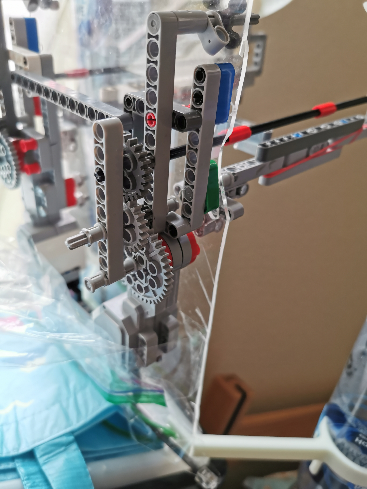
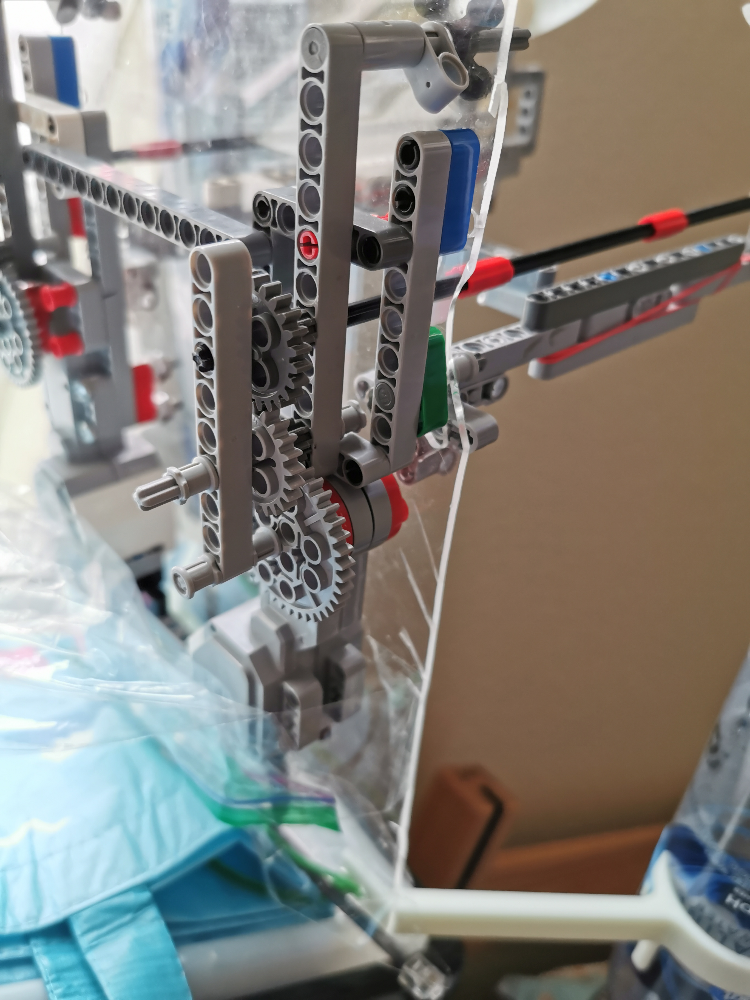
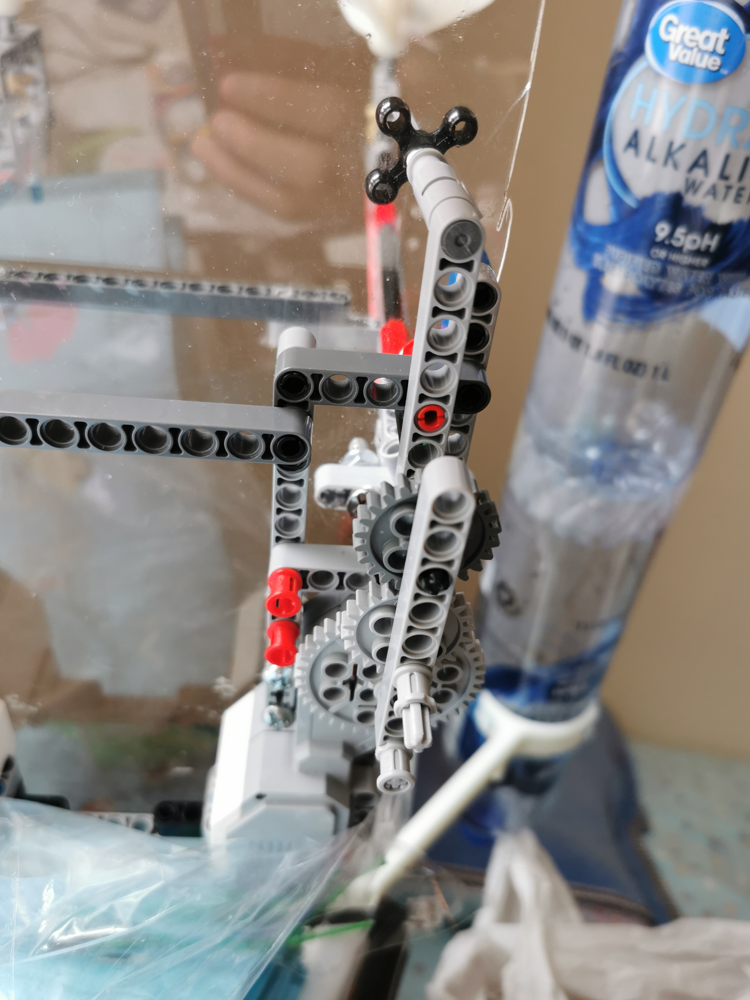
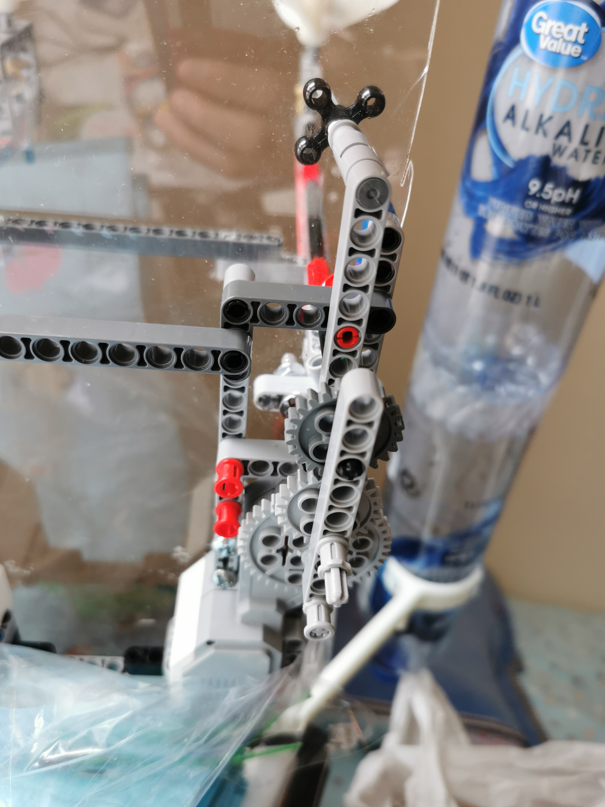
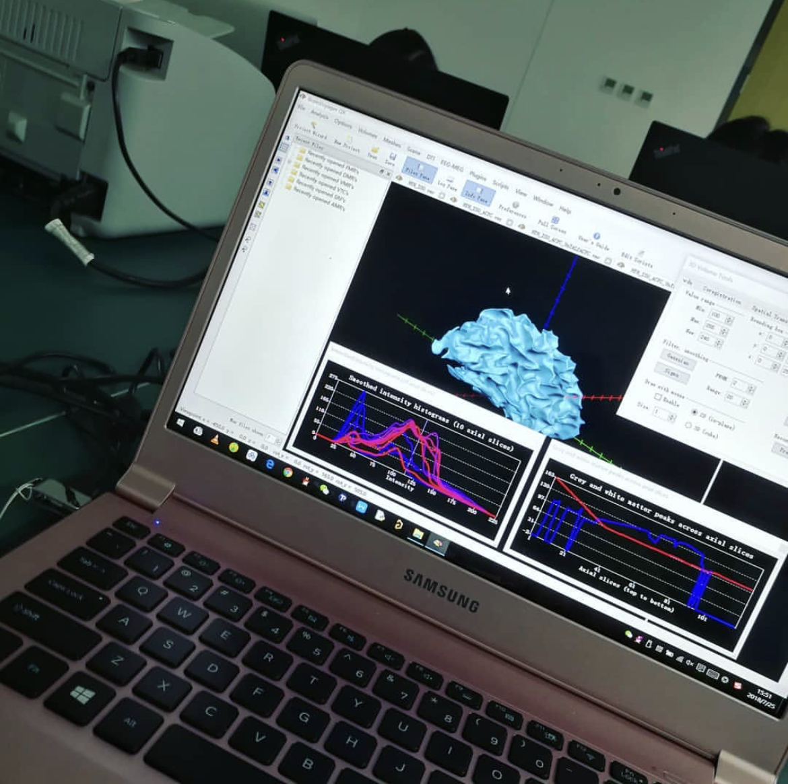
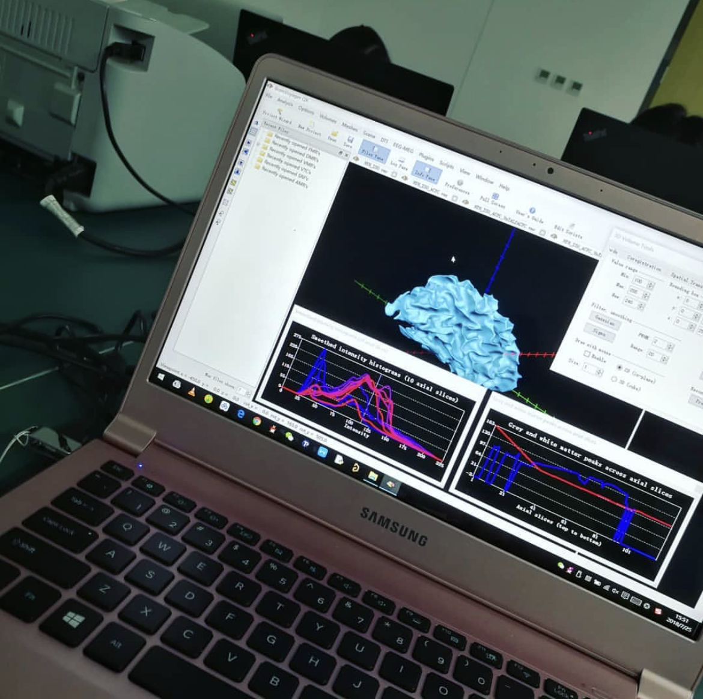

Throne Locker (TAMUhack 2021)
Feb 2021
I worked with a team of 4 engineers to build a mobile app and make a storage box to solve the American Airlines Challenge. Our team brainstorm the idea about how to improve the passengers' flighting experience and developed it. I worked on the front-end development by using the Kivy library in Python, worked on data transmission in the cloud server.
This project awarded the Best Hardware Hack Sponsored by Digi-Key among 150+ teams.


 



 



 
